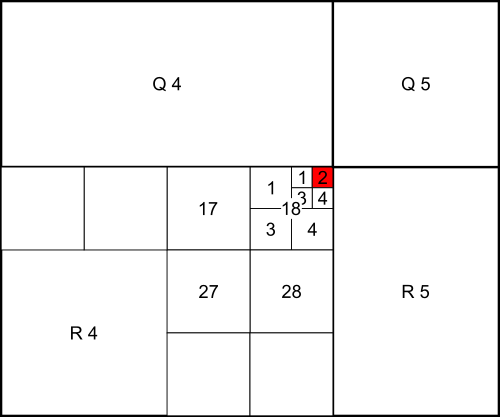

Nederlands Kruidkundig Archief
Nederlands Kruidkundig Archief was a periodical for Dutch Botany by the Royal Dutch Botanical Society. In the publication, various lists of plants are published with location info, for example after a series of excursions with the society. This location info, at least on some occasions, follows the notation from Goethart & Jongmans. Because I wanted to look at one of the lists this is not easily human-readable and an obscure format, I extracted the list and converted it to modern coordinates. This page lists such extracted lists.
Cite this website:
Willighagen, L. G. (2023) Biodiversity data from the Nederlands Kruidkundig Archief. https://larsgw.github.io/nederlands-kruidkundig-archief/.
Data
-
des Tombe, F. A. (1911). Verslag der van 17 tot 21 Juli 1910 gehouden excursie in de omstreken van Tilburg en der daaraan verbonden Vergadering. Nederlandsch Kruidkundig Archief, 44–62. Full text
Series of excursions near Tilburg. The first excursion, July 17th 1910, was attended by Prof. Dr. G. van Iterson, P. J. M. Schuijt, K. Tjebbes, Dr. L. Vuyck, Dr. Th. Weevers and F. A. des Tombe; the rest were attended by D. Lako, Dr. L. Vuyck, and F. A. des Tombe. The plant list also contains data on two preliminary excursions, May 14th and 15th 1910, both attended by F. A. des Tombe.
- May 14th 1910: Tilburg - de Baars - Galgeven - Koningshoeven - Abkoven - Tilburg
- May 15th 1910: Boxtel - Roond - Kasteel Nemerlaer - Oisterwijk
- July 17th 1910: Oisterwijk - Hondsberg - Kolkven - Belversven - Gemulle Hoeken - Oisterwijk
- July 18th 1910: Moergestel - Allemansche Ven - Hildsche Ven - Het Broek - Broekzijde - Vinkenberg - Moergestel
- July 19th 1910: station Rijen - stroomgebeid der Donge - de Kievit - Tilburg
- July 20th 1910: Tilburg - de Blaak - Riel - Goirle
- July 21th 1910: Tilburg - Galgeven - Enschot - Tilburg
des Tombe only lists relatively uncommon plants; the following plants were too common to provide locations for:
- Achillea Ptarmica L.
- Achillea millefolium L.
- Aegopodium Podagraria Spr.
- Agrostis alba L.
- Agrostis vulgaris With.
- Aira flexuosa L.
- Ajuga reptans L.
- Alchemilla arvensis Scop.
- Alisma Plantago L.
- Alnus glutinosa Gaertn.
- Alopecurus pratensis L.
- Angelica sylvestris L.
- Anthemis arvensis L.
- Anthoxanthum odoratum L.
- Anthriscus sylvestris Hoffm.
- Apera Spica Venti P.B.
- Arnoseris pusilla Gaertn.
- Artemisia vulgaris L.
- Athyrium filix femina Roth.
- Bellis perennis L.
- Betula alba L. (= verrucosa)
- Betula pubescens Ehrh.
- Bidens tripartita L.
- Blechnum Spicant Roth.
- Bromus mollis L.
- Calluna vulgaris Salisb.
- Caltha palustris L.
- Campanula rotundifolia L.
- Capsella Bursa pastoris Mönch
- Cardamine pratensis L.
- Carex acuta L.
- Carex glauca Scop.
- Carex panicea L.
- Carex rostrata With.
- Carex vulgaris Fr.
- Centaurea Cyanus L.
- Centaurea Jacea L.
- Cerastium triviale Link.
- Chelidonium maius L.
- Chenopodium album L.
- Chrysanthemum Leucanthemum L.
- Chrysanthemum Segetum L.
- Cicuta virosa L.
- Cirsium palustre Scop.
- Comarum palustre L.
- Convallaria multiflora L.
- Convolvulus Sepium L.
- Corynephorus canescens P. B.
- Crepis virens Vill.
- Cuscuta Epithymum L.
- Cynosurus cristatus L.
- Dactylis glomerata L.
- Drosera intermedia Hayne
- Drosera rotundifolia L.
- Equisetum arvense L.
- Equisetum limosum L.
- Equisetum palustre L.
- Erica Tetralix L.
- Eriophorum angustifolium Roth.
- Ervum hirsutum L.
- Eupatorium cannabinum L.
- Euphorbia helioscopia L.
- Euphrasia officinalis L.
- Festuca ovina L.
- Festuca rubra L.
- Galeopsis Tetrahit L.
- Galeopsis ochroleuca Lam.
- Galium palustre L.
- Genista anglica L.
- Genista pilosa L.
- Gentiana Pneumonanthe L.
- Geranium molle L.
- Glechoma hederacea L.
- Glyceria fluitans R. Br.
- Glyceria spectabilis M. K.
- Gnaphalium uliginosum L.
- Heleocharis palustris R. Br.
- Heracleum Sphondylium L.
- Hieracium Pilosella L.
- Hieracium tridentauum Fr.
- Hieracium umbellatum L.
- Holcus lanatus L.
- Holcus mollis L.
- Hottonia palustris L.
- Humulus Lupulus L.
- Hydrocharis Morsus ranae L.
- Hydrocotyle vulgaris L.
- Hypericum Elodes L.
- Hypericum humifusum L.
- Hypericum perforatum L.
- Hypochaeris glabra L.
- Hypochaeris radicata L.
- Illecebrum verticillatum L.
- Iris Pseudacorus L.
- Jasione montana L.
- Juncus bufonius L.
- Juncus conglomeratus L.
- Juncus effusus L.
- Juncus lamprocarpos Ehrh.
- Juncus squarrosus L.
- Juncus supinus Moench.
- Juncus sylvaticus Reich.
- Juncus tenuis W.
- Lamium album L.
- Lampsana communis L.
- Lemna minor L.
- Leontodon autumnalis L.
- Linaria vulgaris Mill.
- Littorella lacustris L.
- Lolium perenne L.
- Lonicera Periclymenum L.
- Lotus uliginosus Schk.
- Luzula campestris DC.
- Luzula multiflora Lcj.
- Lychnis Flos cuculii L.J
- Lychnis diurna Sibth.
- Lycopodium inundatum L.
- Lycopus europaeus L.
- Lysimachia Nummularia L.
- Lysimachia vulgaris L.
- Lythrum Salicaria L.
- Matricaria Chamomilla L.
- Melampyrum pratense L.
- Mentha aquatica L.
- Mentha arvensis L.
- Menyanthes trifoliata L.
- Molinia coerulea Moench.
- Myosotis palustris With.
- Myrica Gale L.
- Nardus stricta L.
- Narthecium ossifragum Huds.
- Nuphar luteum Smith
- Nymphaea alba L.
- Oenanthe Phellandrium Lam.
- Orchis latifolia L.
- Ornithopus perpusillus L.
- Osmunda regalis L.
- Oxalis stricta L.
- Panicum Crus Galli L.
- Pedicularis palustris L.
- Pedicularis sylvatica L.
- Phalaris arundinacea L.
- Phragmites communis Trin.
- Pinus sylvestris L.
- Plantago lanceolata L.
- Plantago maior L.
- Poa annua L.
- Poa trivialis L.
- Polygala vulgaris L.
- Polygonum Convolvulus L.
- Polygonum Hydropiper L.
- Polygonum Persicaria L.
- Polygonum amphibium L.
- Polygonum aviculare L.
- Polygonum lapathifolium L.
- Polypodium vulgare L.
- Polystichum spinulosum DC.
- Populus tremula L.
- Potamogeton natans L.
- Potamogeton polygonifolius Pourret
- Potentilla Tormentilla Sibth.
- Potentilla anserina L.
- Prunella vulgaris L.
- Quercus Robur L.
- Ranunculus Flammula L.
- Ranunculus acris L.
- Ranunculus repens L.
- Raphanus Raphanistrum L.
- Rhamnus Frangula L.
- Rhinanthus major Ehrh.
- Rhynchospora alba Vahl.
- Rhynchospora fusca RS.
- Rumex Acetosa L.
- Rumex Acetosella L.
- Rumex conglomeratus Mürr.
- Rumex obtusifolius L.
- Sagittaria sagittifolia L.
- Salix aurita L.
- Salix cinerea L.
- Salix repens L.
- Sarothamnus vulgaris Wimm.
- Scirpus caespitosus L.
- Scirpus fluitans L.
- Scirpus lacustris L.
- Scirpus sylvaticus L. (listed with invalid location "R 5. 11. 19")
- Scleranthus annuus L.
- Scrophularia nodosa L.
- Senecio Jacobaea L.
- Senecio sylvaticus L.
- Senecio vulgaris L.
- Setaria viridis P. B.
- Sisymbrium officinale Scop.
- Sium latifolium L.
- Solanum Dulcamara L.
- Solanum nigrum L.
- Sonchus oleraceus L.
- Sorbus aucuparia Gaertn.
- Sparganium ramosum Huds.
- Spergula arvensis L.
- Spergula procumbens L.
- Spergularia rubra Pers
- Spiraea Ulmaria L.
- Stachys arvensis L.
- Stellaria graminea L.
- Stellaria media Nill.
- Succisa pratensis Mch.
- Symphytum officinale L.
- Tanacetum vulgare L.
- Taraxacum officinale Wigg.
- Teesdalia nudicaulis R. Br.
- Teucrium Scorodonia L.
- Thrincia hirta Roth
- Thysselinum palustre Hoffm.
- Trifolium minus Relh.
- Trifolium pratense L.
- Trifolium repens L.
- Triodia decumbens P. B.
- Triticum repens L.
- Typha latifolia L.
- Urtica dioica L.
- Urtica urens L.
- Vaccinium Mirtyllus L.
- Valeriana dioica L.
- Valeriana officinalis L.
- Veronica Chamaedrys L.
- Vicia Cracca L.
- Vicia angustifolia Roth.
- Viola canina L.
- Viola palustris L.
- Viola tricolor L.
For the plants with locations: Map & data
Goethart & Jongmans notation
As I could not find an online source documenting this notation, I thought I would describe it here. A location look like "R 4. 18. 22" and have 4 components, "R 4.", "18.", "2", and "2":
- R 4. indicates the row ("R") and column ("4") in grid covering the Netherlands. This grid is derived from the Militaire Stafkaart, specifically the 1:50 000 edition. The rows of the grid are labeled G to V (skipping vowels, so GHJKLMNPQRSTV). The columns are labeled 1 to 8, where columns 1 and 8 are half as wide as the rest.
- These grid cells are then further divided into 6×8 sub-grids. The second component of the location signifies which cell in the sub-grid the location is in. 18. thus means 1 down and 8 across. These cells are called "uurhokken" or hour cells, because walking along one side (5 km) takes approximately an hour.
- The hour cells are then divided into half-hour cells, a 2×2 sub-sub-grid. This grid is indexed 1 to 4, with 1 meaning top left, 2 top right, 3 bottom left, and 4 bottom right. 2 thus means the top right quarter.
- The half-hour cells are then further divided into quarter-hour cells, again a 2×2 sub-sub-sub-grid. It is indexed in the same way, so 2 again means the top right corner.
Goethart, J. W. C., & Jongmans, W. J. (1902). Planten-kaartjes voor Nederland (Vol. 1–25). E.J. Brill.

The Militaire Stafkaart uses Rijksdriehoekscoördinaten as a coordinate system. These coordinates correspond directly to meters, so it is easy to tell the grid cells of the top-level grid are exactly 40 km wide (except the leftmost and rightmost columns) and 25 km tall; that the leftmost cells start at 0 km; and that the lowest cells start at 300 km. (This because the coordinate system was designed so that the y coordinate would always be higher than the x coordinate).
This knowledge makes it possible to convert the location notation to Rijksdriehoekscoördinaten coordinates, which can then be converted to regular WGS 84 coordinates using EPSG data.